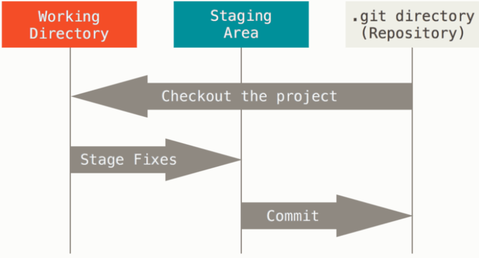
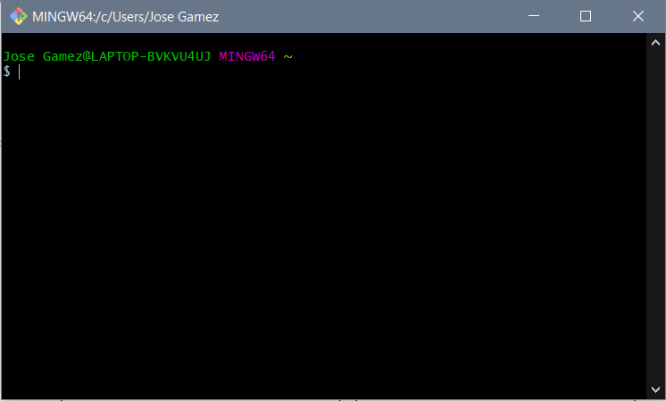

¿Que es Git?
Git es un programa de control de versiones VCS por sus siglas en ingles Al decir que es un sistema de control de versiones nos referimos exactamente a eso, el te ayuda a llevar un control de todas las versiones que haz ido creadon de tu programa a lo largo del tiempo, de esta manera es muy util por si quieres llevar el desarrollo de tu software por caminos diferentes y aun asi conservar la version inicial, o master como la llama Git.
Caracteristicas de Git
Entre las principales caracteristicas de Git encontramos que guarda una copia de casi todas tus operaciones de forma local, esto sirve mas que nada para siempre tener todo tu trabajo almacenado en tu computadora, claro esta que tambien permite almacenar las versiones de tu programa en la nube pero eso lo veremos mas adelante; tambien podemos destacar entre las caracteristicas de Git el hecho de que la mayoria de sus acciones solo añadiran informacion a tu repositorio, es decir, es muy dificil que un archivo se pierda o se corrompa de forma permanente utilizando Git como sistema de control de versiones.
Los tres estados de tu informacion
Esta es la parte mas importante para que puedas continuar de forma adecuada tu aprendizaje
asi que presta atencion, Git tiene tres estados principales en los que se pueden encontrar
tus archivos, es decir, dependiendo de los comandos que escribas o no (mas abajo hay
una lista de comandos basicos para Git con su descripcion) tu informacion se encontrara
de una forma o de otra.
Estos tres estados son: confirmado (committed), modificado (modified), y preparado (staged).
Confirmado: Significa que los datos estan almacenados de manera segura en tu base de datos local.
Modificado: Significa que has modificado el archivo pero todavia no lo has confirmado a tu base de
datos local.
Preparado: Significa que has marcado un archivo modificado en su version actual para que
vaya en tu proxima confirmacion, es decir que lo tienes seleccionado para guardar.

Esto nos lleva a las tres secciones principales de un proyecto de Git: El directorio de Git
(Git directory), el directorio de trabajo (working directory), y el area de preparcion
(staging area).
El directorio de Git es donde se almacenan los metadatos y la base de datos de objetos para tu
proyecto.
El directorio de trabajo es una copia de una version del proyecto.
El area de preparacion es un archivo, generalmente contenido en tu directorio de Git, que
almacena informacion acerca de lo que va a ir en tu proxima confirmacion (commit),
para que te des una idea mas clara el flujo de trabajo en Git es algo asi:
- Modificas una serie de archivos en tu directorio de trabajo
- Preparas los archivos, anadiendolos a tu area de preparacion
- Confirmas los cambios, lo que toma los archivos tal y como estan en el area de preparacion y almacena esa copia instantanea de manera permanente en tu directorio de git.
Antes de continuar les dejare el link directo a la pagina de Git para que lo puedan descargar e instalar y asi puedan continuar la explicacion practicando por su cuenta.
Para usar Git solo deberas instalarlo en tu SO desde la pagina
oficial de Git, allí encontraras
la
opcion de descargar "Git Bash" que es la interfaz de Git por
linea de comandos y la que es
recomendable aprender a usar.
Comandos basicos para la consola de Git
-
git init: Iniciar Git en una nueva carpeta, basicamente le estas diciendo en que carpeta debe iniciar a guardar tus archivos locales
-
git add: Este es el comando para añadir los archivos a tu area de preparacion y posteriormente guardarlos con el siguiente comando
-
git commit -m "texto": Este es el comando que deberas utilizar para guardar tus archivos, en el lugar donde dice "texto" lo ideal es que escribas los cambios que realizaste en ese guardado (commit)
-
git branch "texto": Este comando sirve para añadir una nueva rama de tu proyecto, para experimentar o simplemente para crear dos o varias versiones del programa y desarrollarlas de forma paralela
-
git branch: el comando escrito sin ningun nombre te servira para saber en que rama estas trabajando
-
git checkout "nombre": te permitira cambiar a la rama del nombre que escribas y asi trabajar en ella.
En el apartado de recursos encontraras un video bastante corto explicandote estos comandos en la practica.